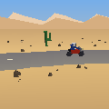
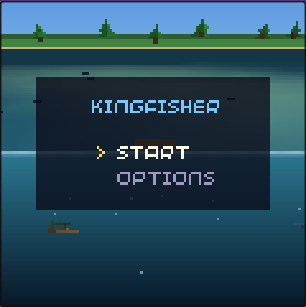
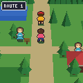
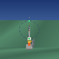
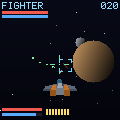
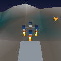

Pico Space Program
webOff the pad, into orbit, across to a moon, down on it.
up: throttle updown: throttle down, and hold it with the engine already shut to pauseleft/right: turn the noseA: drop the spent stage and light the next engineB: time warp, x1 to x200, engine shut and out of the airX: the map, and backY: point the nose along the way you are going, or against it, or neitherThe two dots on the ring are where you are going and where you came from

Star Dancer
webCut the frigate's nav before it jumps.
up/down: pitch the noseleft/right: yawhold X, then left/right: rollhold X, then up/down: throttle, full ahead to a dead stopA: gunsB: missile, at whatever is targetedhold Y: swing the camera onto the target and hold it thererelease Y: step to the next contact, in view firstrelease Y again: walk that ship's hardpointsX and Y together: pause

Tom Lander
webFour pods, one hull, and a pad on the far side of the valley.
X: fire the front podY: fire the left podA: fire the right podB: fire the back poddown: level the hull and fire all fourleft/right: turn the cameraup: pause, and open the menuup/down: move through a menu, any button picks
Archive → 2 games no longer in the rotation